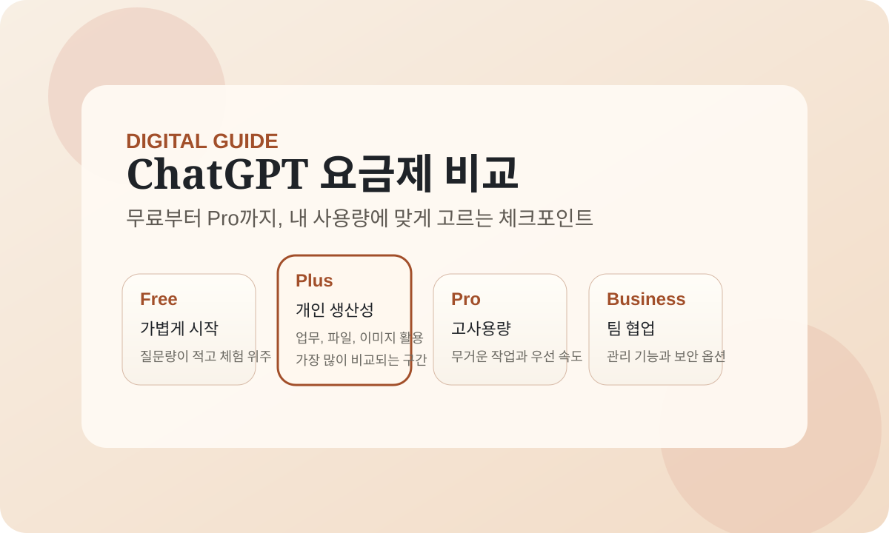

2026-03-19 기준 OpenAI 공식 가격 페이지를 보면 ChatGPT는 Free, Go, Plus, Pro, Business, Enterprise로 나뉩니다. 예전처럼 무료와 Plus만 비교하면 선택이 애매해지기 쉬워서, 지금은 가격과 사용 패턴을 같이 봐야 합니다.
이 글은 공식 가격 페이지와 도움말을 바탕으로, 어떤 플랜이 누구에게 맞는지를 빠르게 고를 수 있게 정리한 안내문입니다. 가격과 포함 기능은 바뀔 수 있으니 결제 직전 공식 페이지를 다시 확인하는 전제를 함께 둡니다.

1. 지금 공식 페이지 기준으로 어떻게 나뉘나요?
개인용은 Free, Go, Plus, Pro이고, 조직용은 Business와 Enterprise입니다. OpenAI 도움말에는 Go가 현재 ChatGPT 지원 국가에서 제공된다고 나와 있고, 가격은 국가와 결제 방식에 따라 다를 수 있습니다.
- Free: 가끔 쓰는 사람, 체험용, 가벼운 질문 위주
- Go: Free보다 여유가 필요하지만 Plus까지는 과한 개인 사용자
- Plus: 개인 생산성 도구로 본격적으로 쓰는 사용자
- Pro: 사용량이 많고 최상위 접근이 필요한 사용자
- Business: 팀 협업, 관리자 제어, 보안이 필요한 조직
- Enterprise: 대규모 운영, 보안 통제, 계약형 지원이 필요한 기업
2. 가격과 핵심 차이
- Free: $0. 제한된 메시지, 업로드, 이미지 생성, 데이터 분석, 메모리만 필요할 때 맞습니다.
- Go: 공식 도움말 기준 지원 국가에서 제공되며, 미국 기준 $8/월입니다. Free보다 메시지, 이미지 생성, 파일 업로드, 고급 데이터 분석, 메모리에서 여유가 있습니다.
- Plus: $20/월입니다. 파일 업로드, 이미지 생성, deep research, agent mode, Sora, projects, tasks, custom GPTs까지 개인용으로 넓게 쓰기 좋습니다.
- Pro: $200/월입니다. 더 넓은 사용량과 최상위 기능 접근이 필요할 때 선택하는 구간입니다.
- Business: 사용자당 연 $25 또는 월 $30입니다. 팀용 작업 공간, SSO, MFA, 내부 소스 연결, 비즈니스 데이터 비학습 기본 제공이 핵심입니다.
- Enterprise: 공개 가격 대신 문의형입니다. 대규모 보안, 통제, 지원이 필요할 때 봅니다.
핵심은 "답변이 더 좋아지느냐"보다 사용량 여유, 도구 접근 범위, 팀 운영 기능이 얼마나 필요한지입니다. 무료는 충분히 쓸 만하지만, 반복 작업이 많아지면 유료 체감이 빠르게 커집니다.
3. 어떤 사람에게 어떤 플랜이 맞을까요?
Free
학생, 가벼운 개인 사용자, 한 달에 몇 번만 쓰는 사람에게 맞습니다. 처음에는 Free로 시작해 실제 사용 빈도를 확인한 뒤 올리는 편이 가장 낭비가 적습니다.
Go
무료가 조금 부족하지만 Plus까지는 아직 부담스러운 개인 사용자에게 맞습니다. 일상 질문, 간단한 업무 보조, 모바일 중심 사용이 많다면 현실적인 중간 선택지입니다.
Plus
블로그 초안, 문서 요약, 파일 업로드, 이미지 생성, 프로젝트 기반 정리를 자주 쓰는 사람에게 가장 무난합니다. 개인 생산성 도구로 ChatGPT를 본격적으로 쓰기 시작하면 체감이 커집니다.
Pro
고난도 추론, 큰 파일 작업, 장시간 사용, 빠른 응답 우선권이 중요한 사용자에게 맞습니다. 개발, 리서치, 기획처럼 사용량이 많고 품질 편차를 줄이고 싶은 경우에 유리합니다.
Business 이상
개인 결제가 아니라 팀 계정, 관리자 기능, 보안 통제, 데이터 정책이 중요하다면 개인용보다 Business 이상을 봐야 합니다. 여러 명이 함께 쓰는 순간부터는 단순 가격보다 운영 구조가 더 중요합니다.
4. 결제 전에 꼭 확인할 것
- 사용 빈도: 한 달에 몇 번 쓰는지, 거의 매일 쓰는지
- 주요 기능: 채팅만 필요한지, 파일 업로드와 이미지 생성도 필요한지
- 작업 강도: 짧은 질문 위주인지, 긴 문서와 반복 작업이 많은지
- 개인 vs 팀: 혼자 쓰는지, 여러 명이 관리해야 하는지
- 정책 변동: 가격, 기능, 제공 국가는 바뀔 수 있으니 결제 직전 공식 페이지 재확인
할인코드나 우회 결제 정보를 먼저 찾기보다, 본인에게 과한 플랜을 피하는 것이 가장 현실적인 절약입니다. 최신 가격은 공식 페이지에서 바로 다시 확인하는 편이 가장 안전합니다.
5. 한 번에 정리하면
- 가볍게 시작하면 Free
- 무료가 답답하지만 가성비를 보면 Go
- 개인 생산성 도구로 본격 활용하면 Plus
- 고사용량과 최상위 접근이 중요하면 Pro
- 팀 운영, 관리 기능, 보안이 중요하면 Business 이상
자주 묻는 질문
Q. 무료만 써도 충분한가요?
가끔 쓰는 수준이라면 충분할 수 있습니다. 다만 파일 업로드, 이미지 생성, 잦은 사용처럼 작업 범위가 넓어지면 유료 체감이 빠르게 커집니다.
Q. 개인 사용자는 보통 어떤 플랜을 가장 많이 고민하나요?
대부분은 Free와 Plus 사이를 가장 많이 고민합니다. 지금은 Go가 중간 선택지 역할을 해서, 무료가 조금 부족한 사용자에게 더 현실적인 대안이 될 수 있습니다.
Q. 가장 안전하게 고르는 방법은 무엇인가요?
무료로 먼저 사용 패턴을 확인한 뒤, 부족한 부분이 사용량인지 기능인지 구분해서 한 단계만 올리는 방식이 가장 실패가 적습니다.
Q. 가격이나 기능은 앞으로도 바뀔 수 있나요?
그럴 수 있습니다. 그래서 후기 글보다 결제 직전 공식 가격 페이지와 도움말을 다시 확인하는 것이 중요합니다.